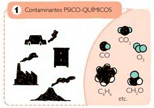

Respirar
CALIDAD DEL AIRE INTERIOR
CALIDAD DEL AIRE INTERIOR
La CALIDAD DEL AIRE INTERIOR hace referencia a la cantidad correcta de aire fresco proporcionado de acuerdo con la tasa de ocupación y el tipo de actividad y también tiene tres dimensiones:
EL ASPECTO FISIOLÓGICO
de la calidad del aire interior
Inhalamos y exhalamos un promedio de 12000 litros de aire por día. Nuestra capacidad para evaluar la calidad de este aire generalmente implica dos sentidos: olfato y el sentido químico común.
EL ASPECTO FÌSICO
de la calidad del aire interior
Inhalamos y exhalamos un promedio de 12000 litros de aire por día. Nuestra capacidad para evaluar la calidad de este aire generalmente implica dos sentidos: olfato y el sentido químico común.
El control por el usuario y la posibilidad de contacto con el exterior son claves para sentirse confortable.
La investigación ha demostrado que la mala calidad del aire (y las termeraturas elevadas) reducen constanatemente el rendimiento de los trabajadores de oficina hasta en un 10%, en medidad como la velocidad de mecanografía.
La mayoría de las personas sienten que la calidad del aire es importante para su bienestar cotidiano. En una encuesta danesa, cuando se le preguntó sobre las palabras que describen los factores que contribuyen a la comodidad, el 21% de las respuestas se relacionó con 'aire fresco / limpio y olor', justo después de 'luz, sol' (46%) y 'temperatura, calor '(35%)
Contaminantes que pudieran afectar la salud de las personas. Sin embargo, hoy aparecen otros parámetros al evaluar la calidad del aire interior, que también son importantes para la comodidad y el bienestar de los ocupantes: la ausencia de malos olores, irritaciones sensoriales y congestión (dolor de cabeza y fatiga). El comfort del aire está determinado por:
- Calidad del aire interior
- Suministro de aire fresco
- Ausencia de contaminantes internos
- Control de olores
CONFORT DE AIRE INTERIOR es un elemento clave en el proceso de diseño y planificación de cualquier proyecto nuevo de construcción o renovación. El primer paso para controlar la contaminación del aire interior es eliminar o minimizar las emisiones de contaminantes primarios y secundarios en la fuente.
Ventilación:
Un flujo óptimo de aire fresco requiere una cierta cantidad de cambios de aire por hora, dependiendo del tamaño de la habitación, los niveles de ocupación y el tipo de actividad. Los sistemas de ventilación automatizados son los más eficientes, pero la ventilación natural (esencialmente, la apertura manual o automática de ventanas) elimina la necesidad de conductos, con ahorros de costos iniciales, menores costos de funcionamiento y beneficios para la salud .
Purificación de aire
Filtrar el aire entrante y saliente ayuda a eliminar las partículas nocivas. Sin embargo, los filtros de aire deben mantenerse para evitar que el sistema de ventilación se convierta en una fuente de contaminación, en lugar de ser la solución.